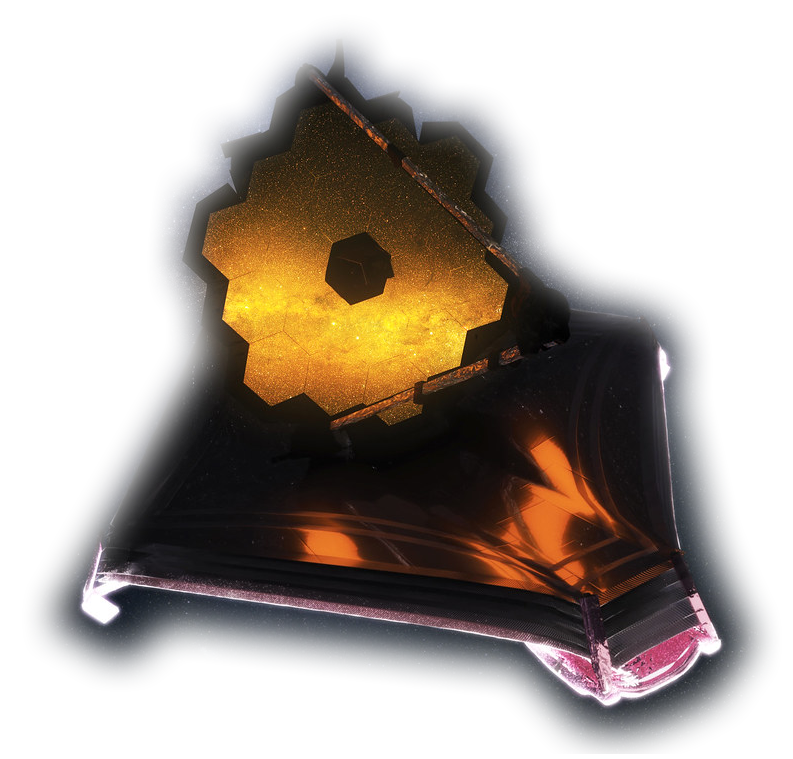

1 / 8

Iterate Alignment For Final Correction
2 / 8

3 / 8

Segment Alignment
4 / 8

Image Stacking
5 / 8
6 / 8

Coarse Phasing
7 / 8

Fine Phasing
8 / 8

Telescope Alignment Over All Instrument Fields Of View